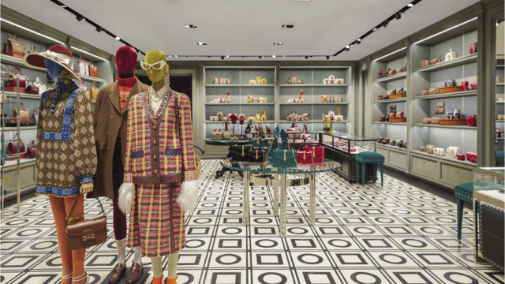
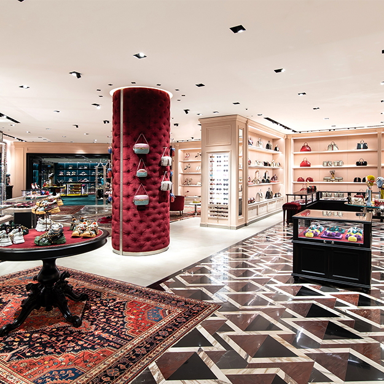

GUCCI
In fact many of our greatest fashion designers and fashion icons are eccentric. In my opinion Gucci answers our desire to be unique , different, eccentric . For this reason Gucci is so successful , people fall in love with the unique and different looks of Alessandro Michele.
